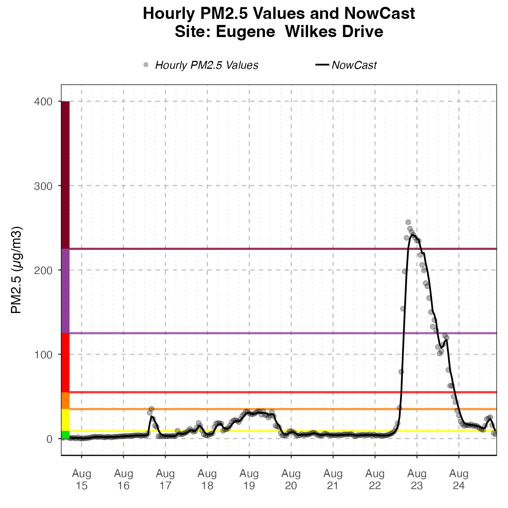
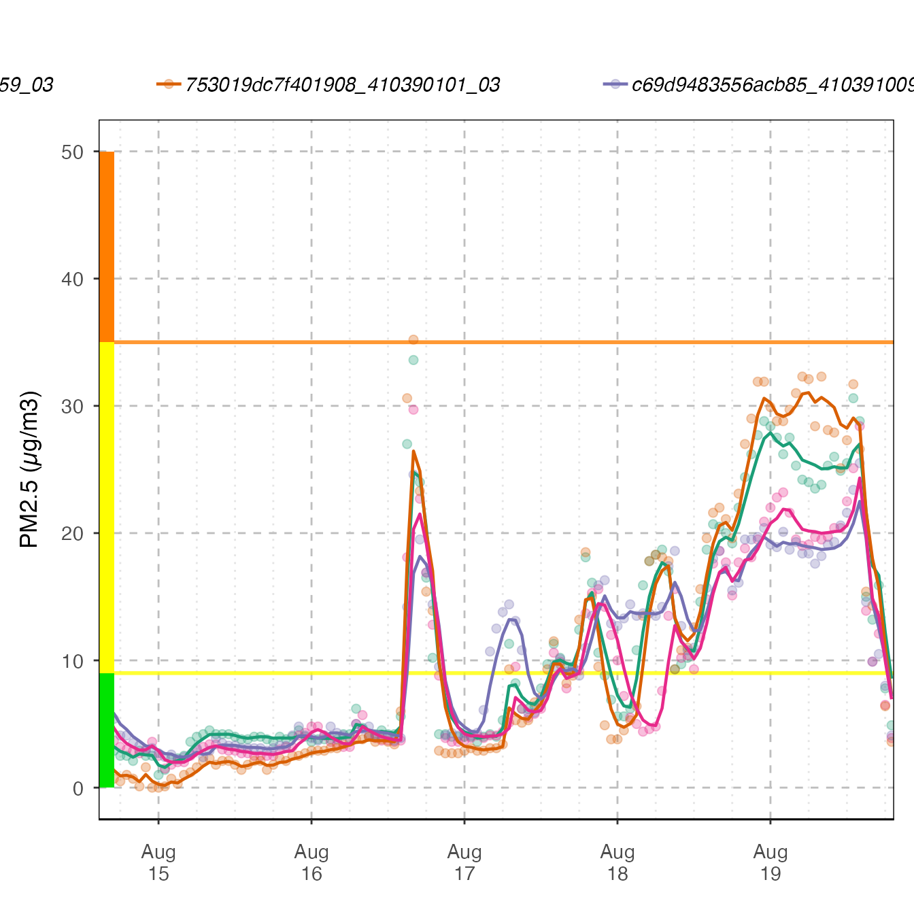
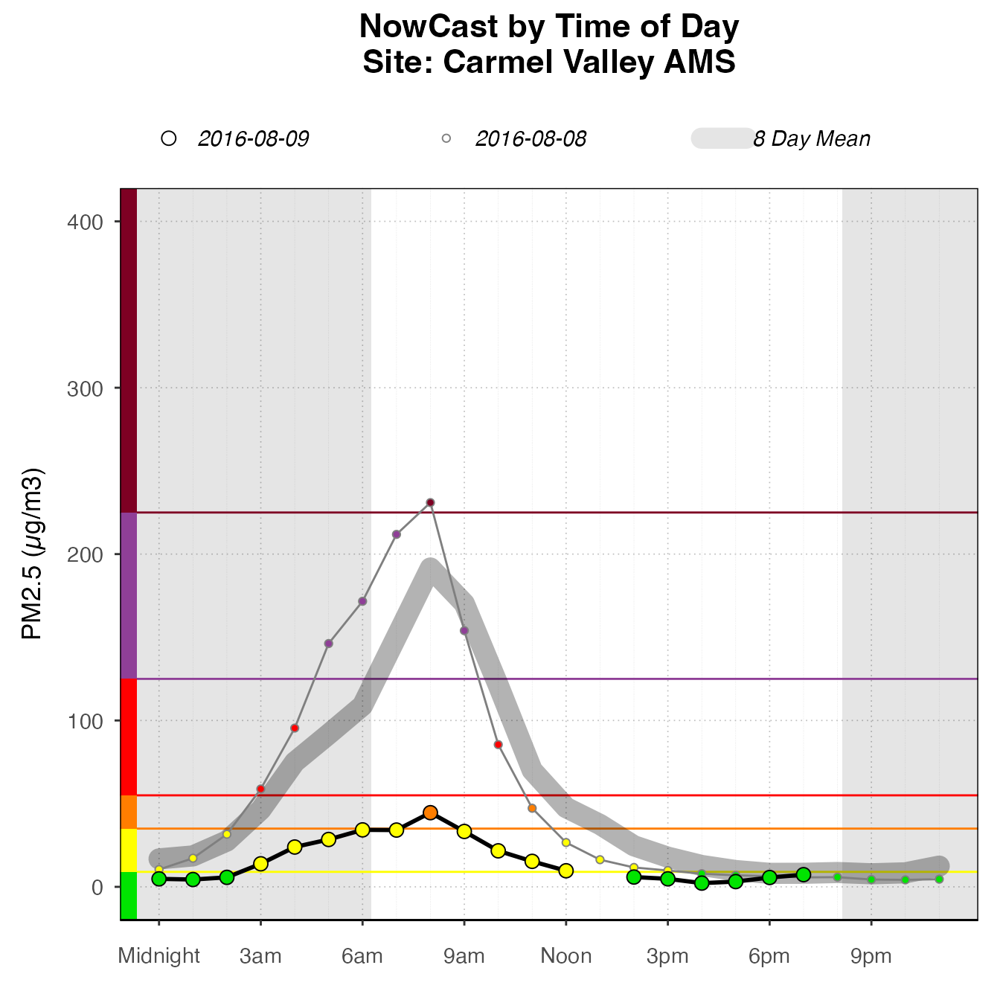

Introduction to AirMonitorPlots
Jonathan Callahan
April 09, 2022
Source:vignettes/AirMonitorPlots.Rmd
AirMonitorPlots.RmdInstallation
NOTE: This package is not yet available on CRAN.
Install the latest version from GitHub with:
Background
The **AirMonitorPlots\** package provides plotting functionality to create production-ready plots for air quality monitoring data. It is designed to work with the **AirMonitor** package, integrating the data with **ggplot2** plotting functions. High-level plotting functions make it easy for users to create beautiful plots of monitoring data. Since these functions are built onggplot2, users familiar withggplot2` can easily use the functions in this package to create custom plots.
Production-ready plots
High-level functions in this package make it easy to create beautiful, publication-ready plots with very few lines of code.
The following plot types are provided:
TODO
Examples
The following examples use example mts_monitor objects from the AirMonitor package.
Timeseries
The default Timeseries plot is optimized for one monitor.
library(AirMonitor)
library(AirMonitorPlots)
monitor_ggTimeseries_archival(
AirMonitor::NW_Megafires,
startdate = 20150815,
enddate = 20150825,
deviceDeploymentIDs = "39c9acebbebc3d09_160050015"
)
If more than one monitor is present, color will be mapped to deviceDeploymentID.
monitor_ggTimeseries(
AirMonitor::NW_Megafires,
startdate = 20150815,
enddate = 20150820,
deviceDeploymentIDs = c(
"fa8288b1da3b2a87_530630047",
"5b3acb7aa679dc14_530639997",
"abde4337eb9064e4_530639996"
)
)
Daily Barplot
The DailyBarplot shows daily averages for one monitor.
monitor_ggDailyBarplot(
mts_monitor = AirMonitor::Carmel_Valley,
startdate = 20160801,
enddate = 20160808
)
Daily By Hour
The dailyByHour is designed specifically to show current data, with special lines for “today” and “yesterday”. However, it can plot historical data, using the enddate for “today”.
monitor_ggDailyByHour(
AirMonitor::Carmel_Valley,
startdate = 20160801,
enddate = 20160809
)